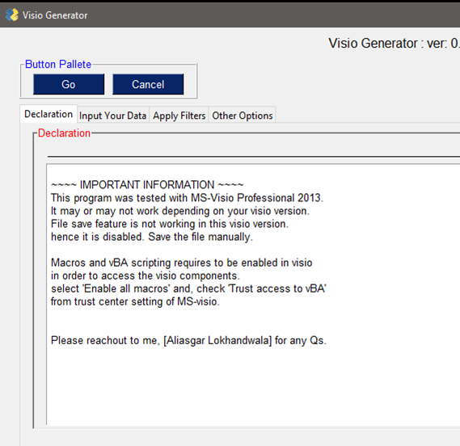
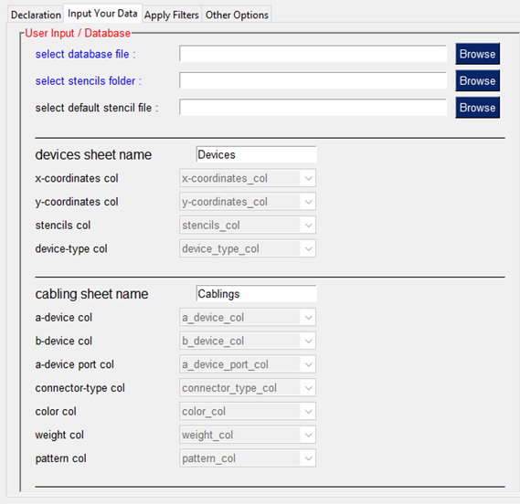
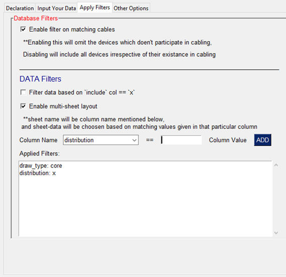
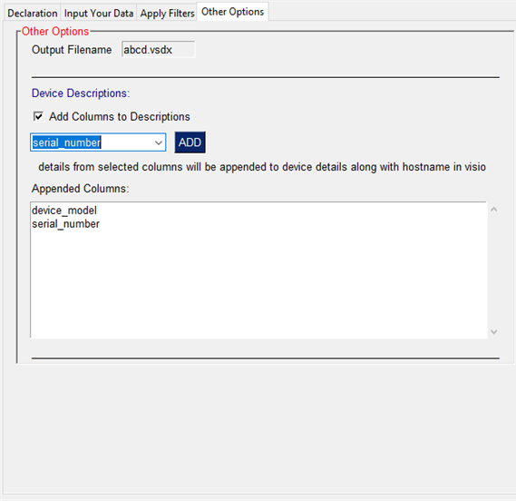
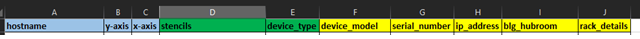
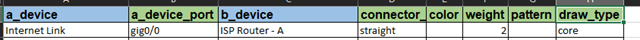

4. GUI Execution Instructions
4.1. Quick and User-Friendly way of execution
This python based project help generating visio drawing from the excel database. Tested on MS-Visio Professional 2013. other version support is not tested. it may or may not work as described.
4.1.1. Requirements
Database: update your data in Excel. Two tabs are necessary, one with devices details, another with connectivity details.
MS-Visio: to generate the drawing.
Stencils: [optional] folder from where project can find visio stencils.
4.2. Execution steps
Import necessary modules:
import os
from copy import deepcopy
from pyVig import UserForm
from pyVig.stencils import get_list_of_stencils
from pyVig.database import DeviceData, CableMatrixData
from pyVig.entities import ItemObjects, Connectors
from pyVig.visio import VisioObject
Cabling database operations function:
def cabling_data_operations(dic):
cable_matrix_data = CableMatrixData(
dic['data_file'], # mandatory: file name (with full path)
sheet_name=dic['cabling_sheet_name'], # mandatory: tab/sheet name
a_device_colname=dic['a_device_col'], # mandatory: a side device of cable
b_device_colname=dic['b_device_col'], # mandatory: b side device of cable
a_device_port_colname=dic['a_device_port_col'],
connector_type_colname=dic['connector_type_col'],
cable_color_colname=dic['color_col'],
cable_weight_colname=dic['weight_col'],
cable_line_pattern_colname=dic['pattern_col'],)
return cable_matrix_data
Device database operations function:
def device_data_operations(dic):
devices_data = DeviceData(
dic['data_file'],
sheet_name=dic['devices_sheet_name'],
x=dic['x-coordinates_col'],
y=dic['y-coordinates_col'],
stencil_colname=dic['stencils_col'],
device_type_colname=dic['device_type_col'],
default_stencil=dic['default_stencil'], )
devices_data.add_description(dic['cols_to_merge'])
return devices_data
Visio app operations functions:
def visio_operations(dic, devices_data, cable_matrix_data, stencils):
with VisioObject(stencils=stencils, outputFile=dic['op_file']) as v:
print("Visio Drawing Inprogress, Do not close Visio Drawing while its running...")
if dic['sheet_filters']:
for kv in dic['sheet_filters'].items():
if isinstance(kv[1], str):
repeat_for_filter(v, devices_data, cable_matrix_data,
dic, kv[0], kv[1], kv[0])
elif isinstance(kv[1], (list, tuple, set)):
for _kv in kv[1]:
repeat_for_filter(v, devices_data, cable_matrix_data,
dic, kv[0], _kv, kv[0] + '_' + _kv)
else:
visio_page_operation(v, devices_data, cable_matrix_data, {}, dic)
return None
def repeat_for_filter(v, devices_data, cable_matrix_data,
dic, filt_key, filt_value, page_key):
flt ={filt_key:filt_value}
cmd = deepcopy(cable_matrix_data)
visio_page_operation(v, devices_data, cmd, flt, dic, page_key=page_key)
def visio_page_operation(v, devices_data, cable_matrix_data, flt, dic, page_key=None):
if dic['filter_on_include_col']:
cable_matrix_data.filter_eligible_cables_only() # [Optional]
if dic['is_sheet_filter']:
cable_matrix_data.filter(**flt) # [Optional] column=records
cable_matrix_data.calc_slop(devices_data) # [Mandatory] calculate cable slop/angle
if flt:
v.insert_new_page(page_key)
else:
v.insert_new_page("PhysicalDrawing")
item_objects = ItemObjects(v, devices_data, cable_matrix_data,
filterOnCables=dic['filter_on_cable'])
Connectors(cable_matrix_data, item_objects)
v.fit_to_draw(item_objects.page_height, item_objects.page_width)
Main Execution Function:
def main():
u = UserForm()
try: dic = u.dic
except: return None
devices_data = device_data_operations(dic)
cable_matrix_data = cabling_data_operations(dic)
stencils = get_list_of_stencils(
folder=dic['stencil_folder'],
devices_data=devices_data,
)
visio_operations(dic, devices_data, cable_matrix_data, stencils)
return None
Execute Now:
main()
try: del(u)
except: pass
4.3. Captures
A declaration page will be displayed
Once all selection made use
Gobutton to start generating visio.Use
Cancelbutton to exit without doing anything.
{kind=link}
Select Data from this tab
database file: select Excel data file
stencil folder: select folder, where all visio stencil files are stored.
default stencil file: [optional] select default stencil file. It will be used if no stencil mentioned in excel data.
devices sheet name:
Devicesdetails tab name in excel data. Cabling sheet name:Cablingdetails tab name in excel data. Other column names: select correct respective column names if it is differ from standard.see also: Excel Details page on standard way of creating data
Note: Missing stencil/device type will display information in
rectangle box.
{kind=link}
Enable various filters from here.
Multiple columns can be match with a value from that column to select specific data to appear to a sheet.

{kind=link}
Select and add additional columns to append those to a device descriptions.
By default only hostname will appear.

{kind=link}
Excel Devices tab
hostname: [mandatory] device names
x-axis, y-axis: [mandatory] device co-ordinates in visio page. column names can be different, however need to update it in menu if different
stencils: [optional] stencil file name (without extension) for each device. No stencil will use default stencil provided. And if no default stencil as well than details will go in a rectangle box. column name can be different, however need to update it in menu if different
device_type: [optional] icon name/number from stencil. column name can be different, however need to update it in menu if different
++ add n-number of additional columns to add an additional details to device descriptions. Required columns needed to be selected and added from
Other Optionstab.
{kind=link}
Excel Devices tab
a_device: [mandatory] device name for a leg of a cable. column name can be different, however need to update it in menu if different
b_device: [mandatory] device name for b leg of a cable. column name can be different, however need to update it in menu if different
a_device_port: [optional] port information for a leg device. column name can be different, however need to update it in menu if different
connector: [optional] connector/cable line type (select either one: straight, angled, curved) (default=angled)
color: [optional] color of connector/line ( red, blue, gray, darkgray, lightgray) (default=black) Or provide RGB number color in tuple format (R,G,B)
weight: [optional] line thickness in number (default=1)
pattern: [optional] line pattern in number (default=solid line)
++ add n-number of additional columns: to add an additional filters and /or multi-sheet output. Required columns filter needed to be added from
Apply Filters.
{kind=link}